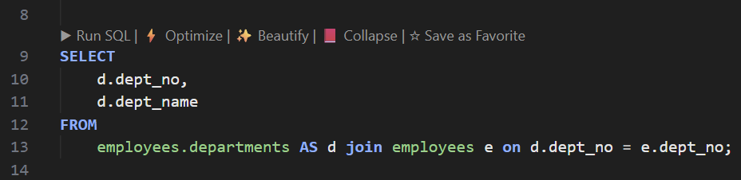
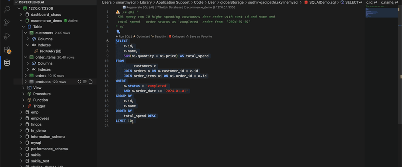
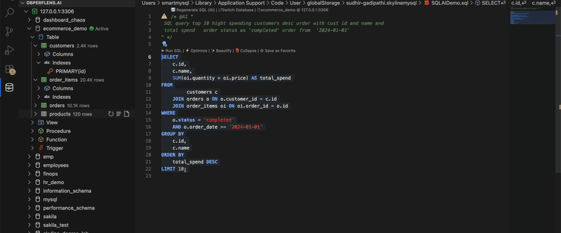

Query Optimizer (QO)
Turn execution plans into actionable fixes: Visual Explain, ranked index DDL, Index Strategy Studio with AI Advisor and 3 AI compare (LLMs), query rewrite suggestions (MySQL), and plan issues for PostgreSQL and SQLite — all in one workbench tied to your active connection.
Overview
The Query Optimizer is a dedicated panel that opens beside your SQL editor. It analyzes the statement under your caret, scores it (0–100), and surfaces:
- Execution plan — table, tree, visual, or JSON views depending on engine.
- Index recommendations — CREATE INDEX scripts with Index Strategy Studio: Index Engine, AI Advisor (Auto), and on MySQL/MariaDB 3 AI compare (LLMs) for multi-model consensus.
- Query rewrites — automatic SQL transformations (MySQL/MariaDB) plus paired rewrites when a hash or FULLTEXT index is suggested.
- Plan issues & tips — structural problems (functions on columns, leading wildcards, weak joins, …) and engine-specific guidance.
SQLLens.AI opens the correct workbench for your connection: Query Optimizer (MySQL/MariaDB), PostgreSQL Query Optimizer, or SQLite Query Optimizer.
Opening the optimizer requires a sqllens.ai Cloud session (entitlement qo on paid tiers). Local connections still work once signed in.
How to open the workbench

- CodeLens — ⚡ Optimize above the statement (requires SQL language mode and an active database).
- Command Palette — Optimize Query / SQL: Visual Explain (wording may vary by keymap).
- Editor context menu — Optimize Query (Visual Explain).
- Slow Query Log Analyzer — open a row to analyze that statement in context.
Before optimizing, confirm the sidebar Active database matches the SQL tab (same rules as Run SQL).
Workbench layout
All engines share the same shell:
| Area | Purpose |
|---|---|
| Header | Connection name, database/schema selectors (MySQL database dropdown; PostgreSQL catalog + schema), host badge, score/grade, 🔄 Re-analyze. |
| Query editor | Editable Monaco SQL pane — change the query and re-run analysis without closing the panel. |
| Optimizer query (MySQL only) | Read-only pane showing the SQL MySQL’s optimizer actually planned (from EXPLAIN FORMAT=JSON or warnings when available). |
| Toolbar strip | Primary actions: Analyze, Explain, Visual explain, Rewrites, Format, Clear, Trace, Copy Index DDL, Create Index. |
| Detail panel | Recommendations, EXPLAIN output, trace log, or create-index modals — controlled by the toolbar. |
| Progress bar | Bottom strip during analysis (plan fetch → recommendations → rewrites). |
Toolbar actions (what each button does)
| Button | What you see | MySQL | PostgreSQL | SQLite |
|---|---|---|---|---|
| Analyze | Default view: recommended indexes + rewrite/tips or plan issues | ✓ | ✓ | ✓ |
| Explain | Raw plan — table (MySQL/SQLite) or tree/visual/JSON (PostgreSQL) | Table | Tree default | Table |
| Visual explain | Graphical plan tree with cost highlights | ✓ | — (use Explain → Visual tab) | — (use Explain → Tree) |
| Rewrites / Tips | Focus on query rewrite cards + optimization tips | ✓ | — | — |
| Format | Beautify SQL in the editor pane | ✓ | ✓ | ✓ |
| Clear | Clear editor (and optimizer query pane on MySQL) | ✓ | ✓ | ✓ |
| Trace | Human-readable index/optimizer algorithm log | ✓ | ✓ | — |
| Copy Index DDL | Copy all actionable CREATE INDEX statements | ✓ | ✓ | ✓ |
| Create Index | Open modal to run DDL (optionally validate with timed before/after) | ✓ | ✓ | ✓ |
Analyze panel (default)
Recommended indexes
Shown at the top of Analyze for every engine. Each row includes:
- Target table and column(s), index type (BTREE, FULLTEXT, … where relevant).
- Reason text and estimated improvement.
- Create per row, or bulk Create Index from the toolbar.
- Primary vs optional — optional rows (e.g. FULLTEXT with leading-wildcard LIKE) are marked when the index only helps after a query rewrite.
Rows that match an existing index (exact or prefix) are hidden from actionable lists — the trace explains “already covered.”
Index Strategy Studio (MySQL / MariaDB / PostgreSQL)
On MySQL, MariaDB, and PostgreSQL, the Analyze panel’s recommended-indexes area is the Index Strategy Studio — a tabbed canvas that separates rule-based suggestions from AI advice. SQLite shows the internal list only (no AI tabs).

| Tab | What it shows | When to use |
|---|---|---|
| ⚙ Index Engine | Internal algorithm recommendations from EXPLAIN, schema catalog, and join-aware rules — same logic as Trace. | Default after Analyze; fastest, no LLM usage. |
| ✨ AI Advisor | One Auto-routed LLM pass for index DDL. Click ▶ Run Auto to fetch suggestions; each row shows table, columns, confidence, match vs Index Engine, and DDL. | Quick second opinion with a single model choice handled by integrated routing. |
| 🗳 3 AI compare (LLMs) | Up to three slots — pick Index Engine, Auto, or a named model per slot, then ▶ Run consensus. Results rank by agreement; top picks get highlighted DDL and Create Index. | MySQL/MariaDB only; requires Pro Plus plan or higher on sqllens.ai Cloud. |
Recommendations that exactly match an index already on the server are moved to Using Existing Indexes (already covered) on the Index Engine tab — they are not offered as new DDL. AI and consensus runs use the same catalog context; always re-run Analyze after creating indexes.
AI Advisor tab
Open the ✨ AI Advisor tab inside Index Strategy Studio after running Analyze (so Index Engine context and schema metadata are loaded).
- Click ▶ Run Auto — one LLM request returns index-only DDL suggestions.
- Review each card: target table, column list, confidence %, whether it matches Index Engine, and the proposed
CREATE INDEXstatement. - Use per-row actions or the shared Create Index flow from the toolbar when you are ready to apply DDL.
Notes on AI Advisor cards are kept short (about one line) so you can scan quickly. For a deeper rationale, open Trace on the Index Engine tab or compare multiple models on the compare tab.
Requires sqllens.ai sign-in and an AI provider configured under Settings → AI. See LLMs & AI.
3 AI compare (LLMs)
Available on MySQL and MariaDB workbenches (not PostgreSQL or SQLite). Included on Pro Plus and higher cloud plans; Free and Pro tiers still have Index Engine and AI Advisor (Auto).

Setup and run
- Run Analyze first so Index Engine recommendations are available as a baseline.
- Open the 🗳 3 AI compare (LLMs) tab.
- For each of up to three slots, choose — Select model —, Index Engine, Auto, or a named model from the dropdown. You can fill one, two, or all three slots.
- Click ▶ Run consensus. All selected sources run in parallel; a status bar shows progress until every source responds.
- Results appear once — changing a slot clears the previous run until you click Run consensus again.
Reading results
Recommendations are grouped into vertical ranked cards (not a wide matrix):
- Top picks — unanimous or strong consensus groups first, with animated DDL Index highlight and a right-aligned Create Index button.
- Agreement chips — Same (matches Index Engine), Partial (some columns agree), Unique (one LLM only), Index Engine only (no LLM matched).
- Summary line — counts unanimous / partial / unique groups plus source count, total recommendations, and max latency.
- All providers — footer section lists full detail per source (Index Engine + each model that ran).
Identical index DDL from different sources is deduplicated into one ranked group. LLM consensus groups rank above engine-only suggestions when scores tie.
Tips
- Use at least Index Engine in one slot so you can see match/mismatch against the internal algorithm.
- Scroll position is preserved when you change model dropdowns — you stay where you were in the list.
- Query rewrites suggested by models (non-DDL) appear in a separate section with Apply rewrite when returned.
- Validate every suggestion with Explain and representative data before production DDL.
MySQL/MariaDB — rewrites & tips on Analyze
Below indexes, Analyze also shows ✏️ Rewrite Recommendations / Tips when the analyzer finds:
- Automatic query rewrites (see full rewrite catalog).
- General tips from the recommendation engine (functions in WHERE, SELECT *, weak joins, …).
Each rewrite card offers Preview, Apply (replaces text in the workbench editor), and confidence/impact badges.
PostgreSQL — Issues & Impact
Instead of SQL rewrite cards, Analyze shows a table of plan issues with severity, suggestion, and impact. A summary strip includes plan cost, estimated rows, sequential vs index scans, and whether the plan used EXPLAIN ANALYZE (actual rows) or estimates only.
SQLite — Performance at a glance
Analyze adds a grade headline, chips (full scans, index lookups, automatic indexes, temp sorts), access-path before/after cards, and quick wins (create suggested indexes, run ANALYZE;).
Explain panel & sub-views
Click Explain to focus on the execution plan. MySQL and SQLite use a compact table; PostgreSQL opens a tabbed EXPLAIN section.
MySQL / MariaDB
- Table — classic EXPLAIN columns (
type,key,rows,Extra). Look fortype: ALLor largerowson driving tables. - Visual — nested plan diagram (same data, easier to present).
- Tree — hierarchical text tree.
- JSON — raw
EXPLAIN FORMAT=JSONfor sharing.
PostgreSQL
- Tree — text plan with seq scan / index scan legend.
- Visual — graphical plan (cost and row width on nodes).
- JSON —
EXPLAIN (FORMAT JSON)output. - When opened with analyze from certain entry points, the plan includes actual row counts and timing — prefer that for production-like validation.
SQLite
- Table —
EXPLAIN QUERY PLANrows with plain-language “what it means” column. - Tree — indented operation tree (SCAN vs SEARCH vs TEMP_BTREE).
Visual Explain (MySQL entry)
From the editor, Visual Explain can open directly; inside the workbench, use Visual explain on the toolbar (MySQL only — PostgreSQL visual lives under Explain tabs).

Trace (algorithm log)
Available on MySQL and PostgreSQL. Click Trace to see how the product parsed your SQL, scored EXPLAIN rows, and chose index recommendations. Sections typically include:
- User query vs optimizer query (MySQL).
- EXPLAIN rows / plan issues.
- Recommender trace (clause detection, join groups, eligible columns).
- Final index list and workbench pipeline notes.
Use 📋 Copy Trace when sharing with support or filing an issue.
Index recommendations & Create Index

Actions
- Copy Index DDL — all actionable statements to the clipboard.
- Create Index — modal with per-index checkboxes, editable DDL, thread count (MySQL bulk), optional validate performance (runs before/after timed execution where supported).
- Per-row Create — run a single recommendation without the bulk modal.
Index types the recommender may suggest
| Type | When | Notes |
|---|---|---|
| BTREE (default) | Equality/range filters, JOIN keys, ORDER BY | Composite indexes follow column order in WHERE/JOIN/ORDER BY. |
| FULLTEXT (MySQL) | Leading-wildcard LIKE '%term%' on text columns | Marked optional — requires rewrite to MATCH(col) AGAINST('term'); LIKE alone will not use the index. |
| HASH / generated hash (MySQL InnoDB) | Wide TEXT/BLOB equality filters | Often paired with a query rewrite using a stored/generated CRC32/MD5 column. |
| SPATIAL / VECTOR | Geo or vector distance patterns | Vector indexes apply when distance is in WHERE/ORDER BY LIMIT, not only projected in SELECT. |
| PostgreSQL | B-tree, GiST/GIN/etc. per column types and predicates | Method policy follows catalog capabilities (see trace for method choice). |
| SQLite | B-tree indexes on filter/join columns | Flags automatic indexes SQLite created at runtime — prefer explicit indexes you control. |
Query rewrite recommendations
Automated SQL rewrite cards are a MySQL/MariaDB workbench feature. PostgreSQL and SQLite focus on plan issues and index DDL instead of one-click SQL replacements.
MySQL — automatic rewrite types
The rewriter scans your statement and may suggest the following (sorted by impact and confidence):
| Rewrite | Typical pattern | Suggested direction | Impact |
|---|---|---|---|
| Function isolation | UPPER(col) = 'X', LOWER(col), DATE(col), YEAR/MONTH/DAY/HOUR(col) | Move function to the literal side or use a date/time range on the column | High |
| LEFT / SUBSTRING | LEFT(col,n) = 'prefix', SUBSTRING(col,1,n) = 'prefix' | col LIKE 'prefix%' (escaped) | High |
| CONCAT on column | CONCAT(col, …) = 'value' | Generated stored column + index (guidance DDL) | High |
| OR → UNION | WHERE a = 1 OR b = 2 on different columns | UNION of two SELECTs | Medium |
| IN subquery → JOIN | WHERE col IN (SELECT … FROM t) | INNER JOIN t ON … | Medium |
| IN → EXISTS | col IN (SELECT … WHERE …) | EXISTS (SELECT 1 …) | Medium |
| NOT IN → NOT EXISTS | col NOT IN (SELECT …) | NOT EXISTS (…) (NULL-safe) | Medium |
| Correlated EXISTS → JOIN | Simple single-table EXISTS | INNER JOIN semijoin form | Medium (lower confidence) |
| LIMIT/OFFSET → keyset | LIMIT n OFFSET > 100 | WHERE id > :last_id ORDER BY id LIMIT n | High |
| DISTINCT → GROUP BY | SELECT DISTINCT cols (not DISTINCT ON) | Same columns with GROUP BY | Low |
| HAVING → WHERE | Non-aggregate predicates in HAVING | Push filters to WHERE | Medium |
| CASE → IF | Simple two-branch CASE WHEN col = v … | IF(col = v, …, …) | Low |
| UNION → UNION ALL | UNION without dedup need | UNION ALL | Medium |
MySQL — index-linked query rewrites
When the index recommender proposes certain indexes, it may attach a paired rewrite:
- Hash / CRC32 column — equality on long TEXT columns → rewrite uses
payload_crc32 = CRC32('value') AND payload = 'value'(or composite hash for multi-column equality). - FULLTEXT — rewrite from
LIKE '%term%'toMATCH(col) AGAINST('term')(in BOOLEAN or NATURAL mode as appropriate). The UI warns that adding FULLTEXT alone without this rewrite will not fix leading-wildcard LIKE.
These appear in the same rewrite list as structural rewrites and can be applied from the workbench editor.
MySQL — general optimization tips (not always auto-rewritten)
The recommendation engine adds tips when it detects patterns such as:
- Functions or implicit conversions on indexed columns (filters and joins).
- Leading wildcard LIKE,
SELECT *,ORDER BY RAND(), largeLIMIT OFFSET. - Weak or missing JOIN conditions, OR in joins, too many tables without joins.
- Non-sargable predicates, partition pruning misses, covering-index opportunities.
- Subquery / EXISTS / IN anti-join patterns, redundant DISTINCT, temp table + filesort from EXPLAIN extras.
Tips include severity, suggested fix text, and sometimes a sample sqlFix snippet — review before running on production.
PostgreSQL — what we handle instead of rewrite cards
- Issues & Impact table from plan analysis (seq scans, high cost nodes, sort/hash spills, …).
- Index recommendations with PostgreSQL-appropriate access methods.
- Trace explaining plan nodes and recommendation rationale.
- No automated one-click SQL rewrite list — apply fixes manually from suggestions and index DDL.
SQLite — what we handle instead of rewrite cards
- EXPLAIN QUERY PLAN interpretation (SCAN vs SEARCH, automatic indexes, TEMP_BTREE).
- Performance overview and issue list with plain-language headlines.
- Index CREATE recommendations and in-workbench apply.
- No Trace tab, no Rewrites/Tips toolbar button, no profiler-based validation (wall-clock timing may still be used for create-index validation).
Engine comparison (at a glance)
| Feature | MySQL / MariaDB | PostgreSQL | SQLite |
|---|---|---|---|
| Panel title | Query Optimizer | PostgreSQL Query Optimizer | SQLite Query Optimizer |
| Dual optimizer-query pane | Yes | No | No |
| Visual plan graph | Yes (toolbar) | Explain → Visual tab | Explain → Tree |
| Automatic SQL rewrites | Yes | No | No |
| Algorithm trace | Yes | Yes | No |
| Create index in UI | Yes | Yes | Yes |
| Profiler validate on create | Yes | Yes (EXPLAIN ANALYZE path) | Wall-clock only |
| Batch optimize (from QLA) | Yes | Varies by entry | Varies by entry |
When to optimize
- Query is slow on representative data volume.
- EXPLAIN shows full scans, large row estimates, or “Using filesort / temporary”.
- Before shipping reporting queries or new API endpoints.
- After importing the Slow Query Log Analyzer results.
Batch optimize (from slow query log)
Select multiple entries in the Query Log Optimizer and run batch analysis to collect overlapping index suggestions across statements — useful when several queries share the same missing index.
Optimizer settings
Common keys (VS Code Settings → search queryOptimizer):
skyline-mysql.queryOptimizer.disableVisualExplain— skip visual plan rendering.skyline-mysql.queryOptimizerVerboseIndexLog— extra index recommender logging (Debug Console when debugging).skyline-mysql.joinCompletions.showDeptEmpSubqueryBridge— unrelated to QO panel but affects join/index demos on sample DBs.
Full list: Settings → Optimizer.
Tips & limits
- Re-run Analyze after creating indexes — confirm the plan uses the new keys.
- Statistics matter: run
ANALYZE TABLE(MySQL),ANALYZE(PostgreSQL/SQLite) on large tables after bulk loads. - Rewrites are suggestions — verify semantics (NULL handling, duplicates with UNION ALL, timezone boundaries on DATE rewrites).
- Test destructive or locking DDL on a staging copy first; use the workbench’s impact hints when shown.
- Use Index Engine for deterministic rules; AI Advisor for a quick Auto pass; 3 AI compare (LLMs) when you want ranked agreement across models (MySQL/MariaDB, Pro Plus+).
Related docs
- SQL workspace — Run, EXPLAIN & Optimize
- Slow Query Log Analyzer
- SQL autocomplete
- Performance Monitor
- LLMs & AI — provider setup for AI Advisor and compare